Датасет содержит данные о потреблении электроэнергии в городе Тетуан, Марокко. Город снабжается тремя электростанциями Quads, Smir и Boussafou, на каждой их которых установлена автоматизированная система, осуществляющая сбор данных об энергопотреблении каждые 10 минут. Дополнительно доступна информация о температуре и влажности воздуха, скорости ветра и низкотемпературных флюидах.
Страница датасета на сайте Kaggle
target1 - уровень потребления электроэнегии (электростанция Quads);
target2 - уровень потребления электроэнегии (электростанция Smir);
target3 - уровень потребления электроэнегии (электростанция Boussafou).
Первый этап
Задача первого этапа - построить авторегрессионную модель для прогнозирования потребления энергии, вырабатываемой электростанцией Quads (целевая переменная - target1). Модель должна учитывать множественные сезонные факторы и дополнительно сгенерированные предикторы, обучаться на данных текущего месяца и прогнозировать спрос на электроэнергию в следующем месяце.
Обучение и оценка: Февраль-Июль;
Валидация и анализ: Август;
Итоговое тестирование: Сентябрь.
В качестве предикторов используется дополнительно сгенерированная переменная - величина спроса на электроэнергию за предыдущий месяц в аналогичный момент времени, а также результаты преобразования Фурье.
Последующие этапы
опробовать различные стратегии бустинга (прогнозирования остатков) для повышения точности модели;
исключить аномалии из обучающих данных и оценить эффект;
дополнить предикторы с помощью библиотеки feasts языка R;
обучить ML-модель и ANN для сравнения с классической авторегрессией;
прогнозировать тренд/сезонность/остатки отдельно - построить ансамбль авторегрессий.
Исследование данных
Неагрегированные данные
В дополнение к полному обучающему датасету и для первичного ознакомления здесь отображаются данные целевой переменной за месяц (Март), за неделю (11 неделя года), за сутки (15 Марта).
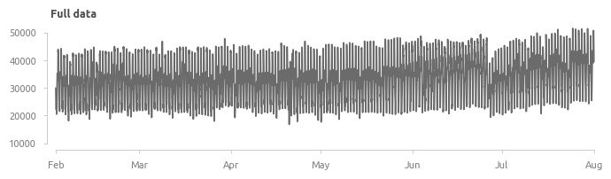
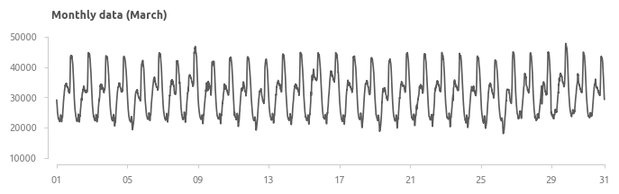
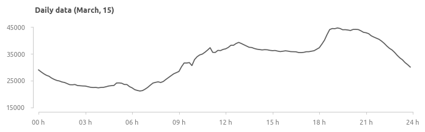
Среднесуточное потребление
Наклон меняется дважды - в начале мая и в середине июня. По всей видимости, в первом случае изменение вызвано естественными причинами, тогда как во втором - это аномальное снижение в двадцатых числах июня и последующее восстановление до естественного уровня с более высокими темпами.
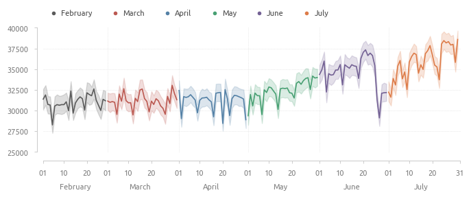
Полные данные за апрель, май и июнь
Визуализация полных данных раскрывает наличие суточной сезонности, провалов в воскресные дни. Аномальное снижение потребления, обнаруженное в предыдущем пункте, произошло в понедельник, 26 июня.
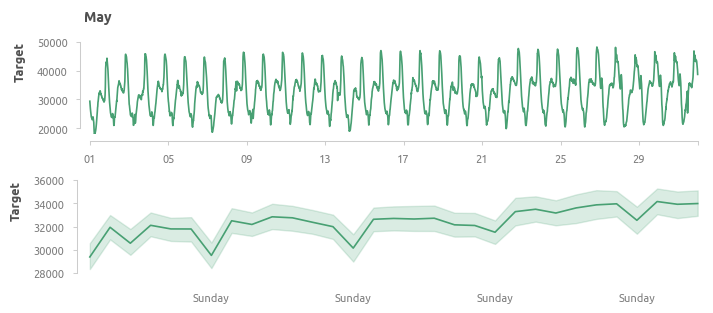
Данные, усредненные по дням недели
Значимость выходного дня (воскресенье) подтверждается - в выходные дни потребление в среднем ниже на 2000 единиц.
Данные, усредненные по числам месяца
В первой трети месяца потребление заметно ниже, провал 14-го числа может быть связан с региональными особенностями.
Суточные данные
Аномалии в данных
Аномалии можно условно разделить на два типа: точечные и групповые. В рамках данной работы точечными аномалиями считаются резкие скачки уровня потребления (нагрузки электростанции), а групповыми - изменение структуры временного ряда и отклонение от общей тенденции. В целом, поиск обоих типов аномалий ограничивается визуальной оценкой данных.
Большинство аномалий характеризуются резким сниженим уровня потребления электроэнергии и достаточно быстрым восстановлением. Таковыми являются аномалии 28 марта, 29-31 мая, 5-7 июня. Отдельно стоит отметить аномалии 26 июня и 20 апреля.
С точки зрения контекста, аномалии также можно разделить на два типа: внутренние и внешние. Внутренними считаются аномалии, возникшие в следствие несовершенства системы электроснабжения. Сюда входят, например, сбои в работе оборудования, которые приводят к перебоям с поставкой электроэнергии потребителям. Внешние - это снижение и увеличение потребления в результате воздействия фаткоров, не связанных с системой электроснабжения (например, аномалия 26 июня). В рамках данной работы не предусматривается сбор дополнительных данных, а имеющихся данных недостаточно для включения внутренних и внешних эффектов в модель, соответственно, задача прогнозирования аномалий не стоит.
Групповые аномалии
Аномалия 26 июня
На рафиках видно, что потребление снизилось одновременно во всех трёх районах города и плавно восстанавливалось в течение последующей недели. Вероятная причина - акции протеста 26 июня 2017 года (ссылка на статью в The Nation).
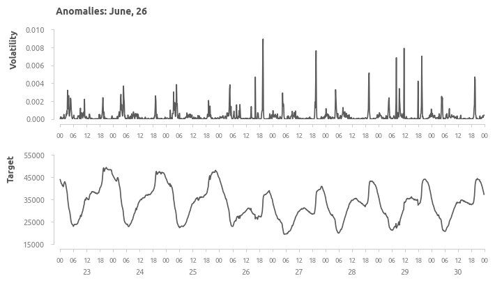
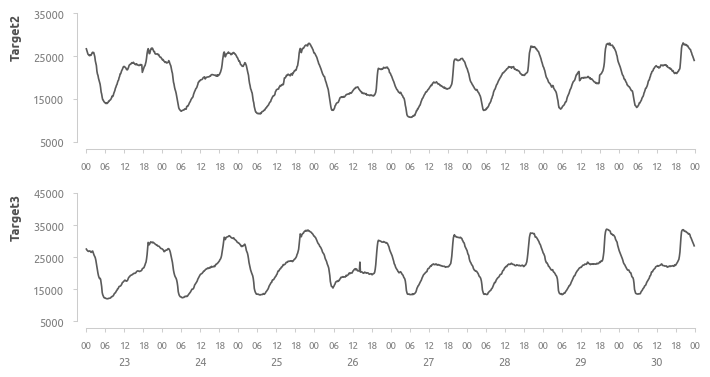
Точечные аномалии
Аномалии, определенные здесь как точечные, выявляются с помощью волатильности. Волатильность рассчитывается как квадрат относительного изменения величины спроса для каждого элемента. Основные аномалии произошли во второй половине апреля, в конце марта и мая, в первых числах июня и июля.
Аномалия 20 апреля
Внешне это выглядит как авария на электростанции Quads, потому что одновременно с резким снижением нагрузки на этой электростанции, выросла нагрузка станции 2 (Smir). По всей видимости, некоторые потребители были переключены на электростанцию Smir.
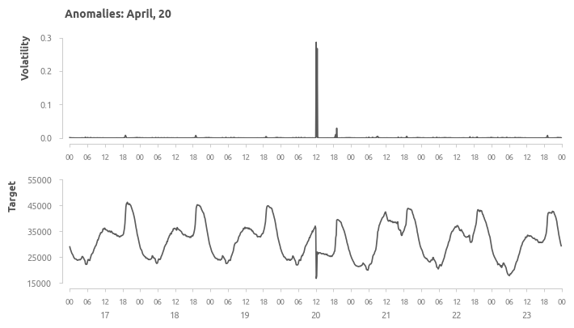
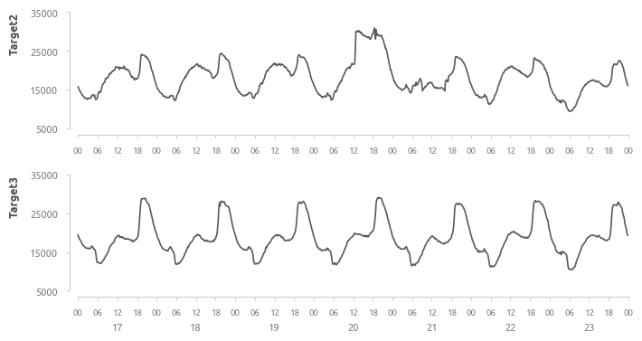
Базовая модель
В данном разделе проводится несколько поэтапных кросс-валидаций для выбора параметров модели. В первую очередь оцениваются параметры авторегрессии, после этого выбираются период и порядок ряда Фурье для учета сезонных факторов. Далее базовая модель оценивается на валидационных данных для получения первых оценок эффективности и ошибок.
Последовательность кросс-валидаций для оценки параметров модели
Несмотря на то, что коэффициент детерминации \(R^{2}\) не рекомендуется использовать при работе с временными рядами, он будет рассмотрен для наглядности.
\(R^{2}\) - простой способ оценить, насколько прогноз соответствует истинным значениям;
\(MAE\) (Mean Absolute Error) - метрика, относительно устойчивая к выбросам;
\(RMSE\) (Root Mean Squared Error) - метрика, чувствительная к выбросам;
В качестве бенчмарка эффективности используются две наивные модели.
Первая - это значение целевой переменной в предыдущий период вермени (10 минут назад). На практике подобная модель бесполезна, так как горизонт планирования составляет одно единственное измерение. Тем не менее, её прогнозы полезны для сравнения с другими моделями, и их условно можно назвать идеалом точности для данного врменного ряда.
Характеристики первой наивной модели
\(R^{2}:\) 0.992;
\(MAE:\) 468;
\(RMSE:\) 697
\(MAPE:\) 1.33;
Вторая - это уровень потребления в предыдущем месяце в аналогичный момент времени. Например, для 10:00:00 1 августа это будет значение потребления в 10:00:00 1 июля Если в предыдущем месяце отсутствует аналогичная дата, например, в предыдущем месяце 30 дней, а в текущем - 31 день, то данные за 31 число заполняются данными за 30. Модель оценивается на данных за август.
Характеристики второй наивной модели
\(R^{2}:\) 0.746
\(MAE:\) 2763;
\(RMSE:\) 3558
\(MAPE:\) 7.68;
Вторая наивная модель объясняет примерно 75% изменчивости данных за август. Во многом величина ошибок объясняется довольно сильным различием июльских и августовских данных.
Стационарность и автокорреляция
Временной ряд стационарен как для полных обучающих данных (Февраль-Июль), так и для ежемесячных данных на уровне значимости \(\alpha\) = 0.05. Стационарность проверяется через Dickey-Fuller test.
График автокорреляции дает первое представление о наличии сезонности - пики для лагов 144, 72 (эквивалентны суточной и 12-часовой сезонности).
Последний значимый коэффициент на графике PACF для дифференциорованных данных равен 5, соответственно на первой кросс-валидации исследуются все комбинации \(AR\) и \(MA\) в пределах от 1 до 6 для двух вариантов параметра \(i\) - 0 и 1.
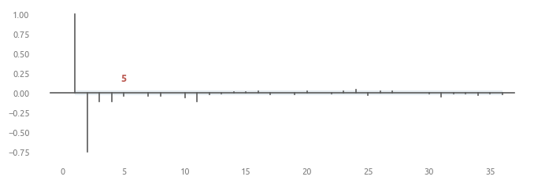
Схема кросс-валидации
Для этого и последующих этапов перекрестной проверке используется следующая схема (до стадий Valid и Test).
Данные с Февраля по Июль разбиваются на равные обучающие и валидационные блоки, образуя последовательность из 5 фолдов. Временной лаг (задержка) между блоками не предусматривается. Экзогенные переменные пока не добавляются. Метрика эффективности - RMSE.
Параметры авторегрессии
Кросс-валидация №1
Результаты кросс-валидации приведены в таблице ниже. В лидерах преимущественно модели с \(AR\) и \(MA\) выше 4. Лучшая из относительно простых моделей - \(ARIMA (2, 1, 1)\) - показала второй результат. Ошибки моделей с интеграцией меньше примерно в 2-2.5 раза.
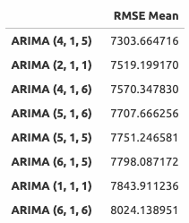
Для последующей оценки выбраны модели \(ARIMA (4, 1, 5)\) и \(ARIMA (2, 1, 1)\).
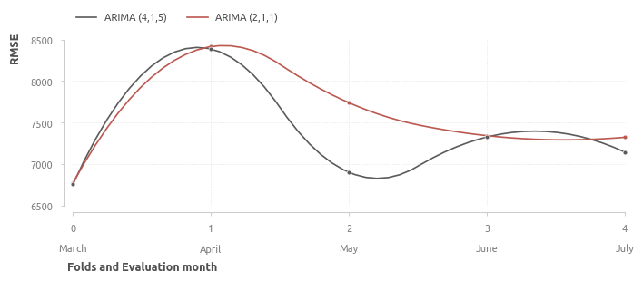
Сезонные факторы и экзогенные переменные
Далее в модели добавляются экзогенные переменные и сезонные факторы. Единственной экзогенной переменной является значение целевой переменной в аналогичный момент времени месяц назад.
Для учета сезонности применяется преобразование Фурье - исходный ряд раскладывается на частотные компоненты. На графике показаны результаты пребразования и обнаруженные периоды - по числу элементов данных на верхнем графике и по количестве часов на нижнем.
Периодичность с лагом в 144 элемента эквивалентна суточной (24-часовую) сезонности, 72 элемента - 12-часовая сезонность, 48 и 36 - 8-часовую и 6-часовую, соответственно.
Кросс-валидация №2
Период ряда и число компонентов выбирается с помощью кросс-валидации по описанной выше схеме. В первую очередь выбирается период ряда с одинаковым числом компонентов для каждого периода (исследуются от 2 до 4 компонентов). За основу берется период, равный 144, к которому последовательно добавляются периоды 72, 48 и 36. Результаты представлены на графике. Самые эффективные - модели с единственным суточным циклом и четырмя компонентами.
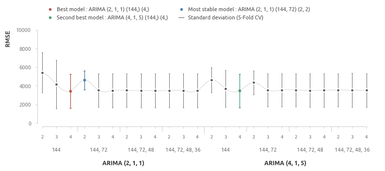
Модели с двумя компонентами заметно уступают в эффективности, но демонстрируют неплохую плотность прогнозов. Отобразим результаты кросс-валидации для трёх разных моделей:
самая эффективная модель;
модель с лучшей плотностью прогнозов;
случайно выбранная сложная модель с относительно большим числом периодов и компонентов.
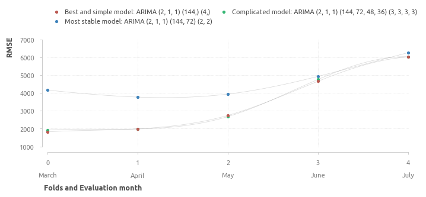
Стабильная модель ни в одном фолде не превосходит две другие модели, соответственно, цена стабильности - это заметная потеря в эффективности, и данная модель не будет исследоваться в дальнейшем. Поведение более сложной модели практически не отличается от простой, которая к тому же в среднем является более эффективной. Модель, которая отобрана по итогам данной кросс-валидации - \(ARIMA (2, 1, 1) (144) (4)\). Таким образом, на данном этапе получается, что в модель должен быть включен единственный сезонный фактор - суточная сезонность с периодом 144.
Кросс-валидация №3
Следующий этап - это оценка числа компонентов. Перекрестная проверка проводится для модели \(ARIMA (2, 1, 1)\).
Оцениваются все возможные комбинации периодов (144), а также для периодов (1008, 144, 72, 48), (144, 72, 48), (144, 72). Несмотря на то, что предыдущие проверки показывают, что наиболее эффективна модель с единственным периодом (144), остальные комбинации проверяются для бóльшей надежности и уверенности в выборе.
Результаты этого этапа кросс-валидации подтверждают результаты предыдущих. Простая модель с единственным периодом демонстрирует меньшую ошибку как в среднем, так и почти в каждом отдельном фолде.
Прогноз в первом приближении
Модель, которая выбрана после обощения результатов кросс-валидации, это \(ARIMA (2, 1, 1) (144) (4)\). Для валидации модели используются данные за Август.
Прогнозы модели с доверительными интервалами
Модель ожидаемо превзошла вторую наивную модель, но не достигает эффективности первой (в скобках указаны результаты первой наивной модели).
\(R^{2}:\) 0.893 (0.99);
\(MAE:\) 1778 (468);
\(RMSE:\) 2307 (697).
\(MAPE:\) 5.14 (1.33);
Величина \(R^{2}\), равная 0.893, это неплохая стартовая точка для дальнейшего улучшения модели.
Прогнозы модели и среднее значение ошибок за сутки
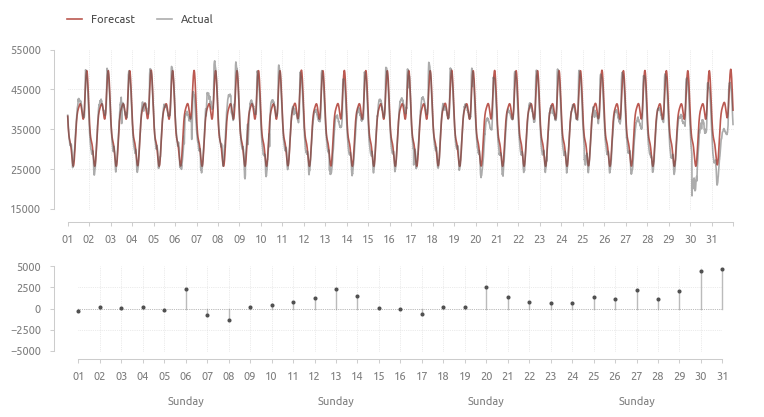
Модель не среагировала на провалы в потреблении 6 и 30 августа;
Несмотря на наличие предиктора is_Sunday, модель переоценивает потребление в воскресенье - 6, 13, 20, 27 августа.
Сильнее всего модель ошиблась 30 и 31 августа, график среднесуточных ошибок подтверждает переоценку потребления в воскресенье. Возможно наличие паттернов в ошибках для четных и нечетных недель. Прогнозы для 1 и 3 недели заметно точнее.
Сравнение распределения остатков с нормальным распределением
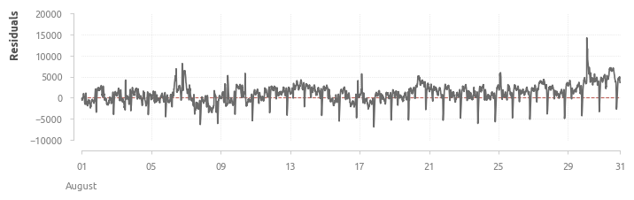
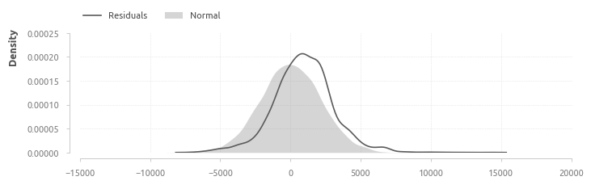
Исследование модели
На данный момент отмечено несколько аспектов, которые могут быть улучшены:
переоценка потребления в воскресные дни;
четные и нечетные недели.
Рассмотрим результаты кросс-валидациия финальной модели \(ARIMA (2, 1, 1) (144) (4)\) более детально, чтобы определеить возможности улучшения.
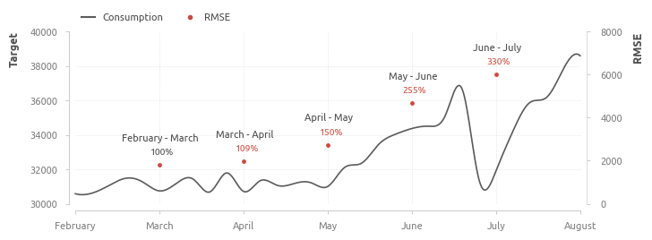
Ошибки за март и апрель практически не отличаются, изменение тренда в Мае привела к росту ошибки прмерно на 150% относительно марта - от 1826 до 2743. Данные за Июль и Июнь также заметно отличаются (аномалия второй половины июня и изменение наклона тренда), что привело к дальнейшему росту ошибки.
Модель, обученная на данных за последний месяц, чувствительна к изменению тренда и не способна улавливать долгосрочные тенденции.
На более детальном графике заметны следующие особенности. В период стабильных данных (Март-Май) модель чаще ошибается в пиковые ночные периоды, но за счет точности в дневное время в целом показывает хороший результат. Похоже, что тренд начал меняться в конце Мая, и модель зафиксировала это - прогнозы на Июнь скорректированны и численно несколько выше, чем в предыдущие месяцы. Также модель среагировала на резкое падение спроса конца Июня, что привело к нерелевантным прогозам в Июле - в то время как потребление в Июле росло быстрее, чем в Июне, модель предполагала, что тенденция будет обратная, и её прогнозы численно даже ниже июньских.
На мартовских и апрельских данных заметен уже известный паттерн - переоценка потребления в воскресные дни.
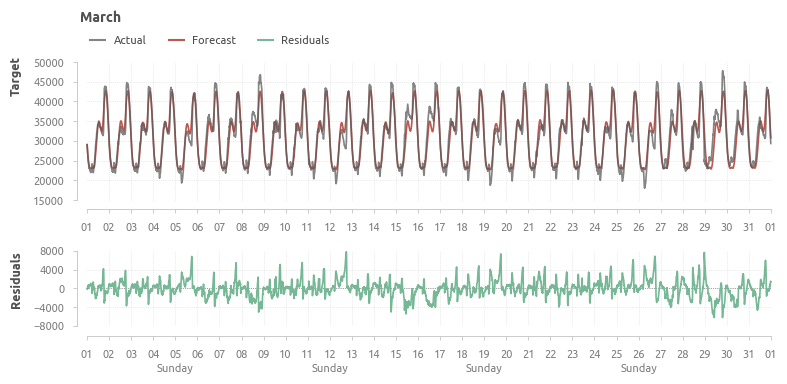
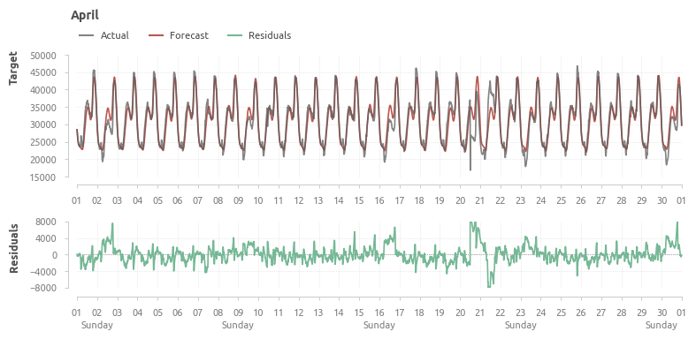
Начиная с 27 мая структура данных остатков заметно меняется, этому предшествовало повышенное потребление на предыдущей неделе. Также можно отметить небольшую недооценку потребления на 2 и 3 неделе.
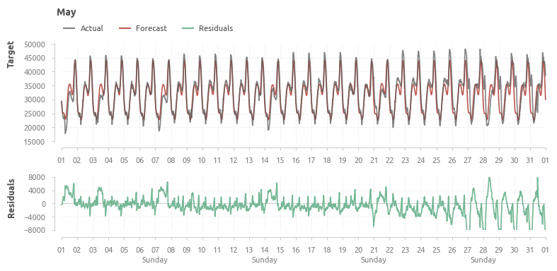
В июне и июле модель продолжает сильно недооценивать потребление.
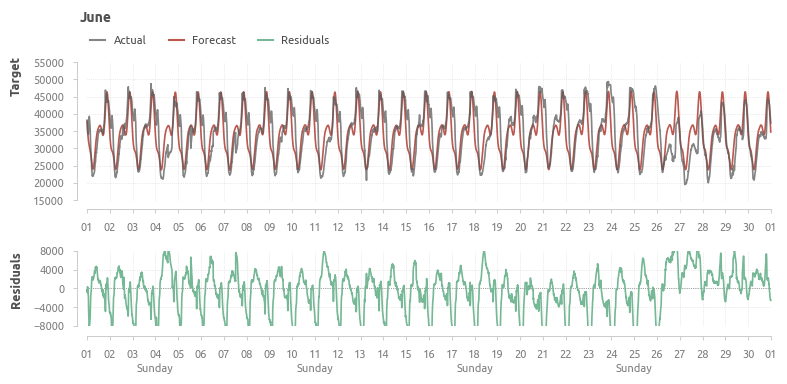
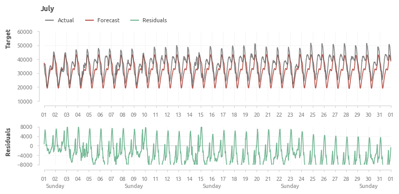
Пример суточных данных
Суточные данные относительно спокойного Мая, а также нестабильных Июня и Июля. В качестве примера выбран день - 13 число.
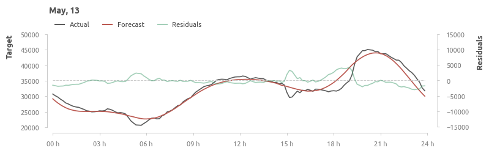
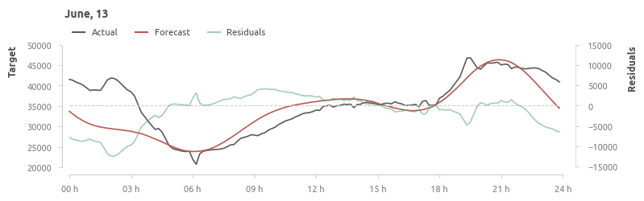
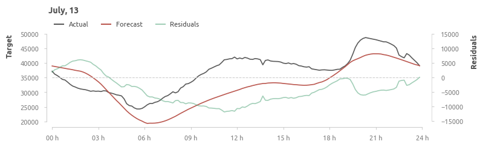


 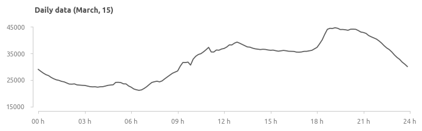
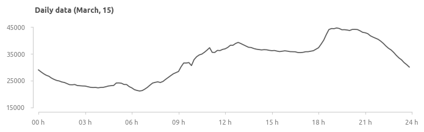
 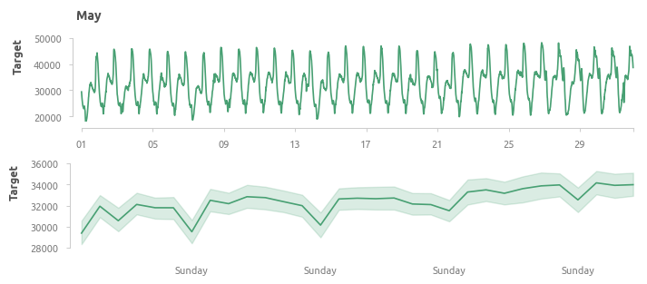
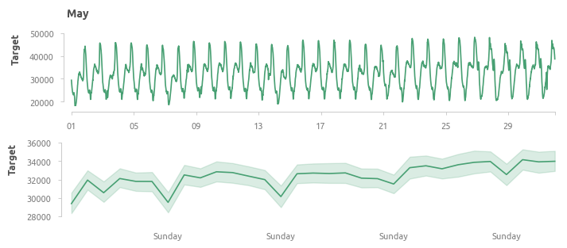